Macro Hook thị giác trực diện: Định danh chủ thể DJI Mic siêu nhỏ gọn và mở màn chuỗi trải nghiệm ASMR thính giác
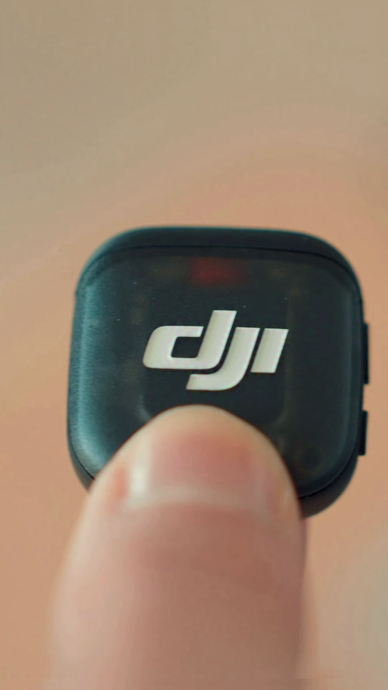
ĐẦU SHOT (0.00s)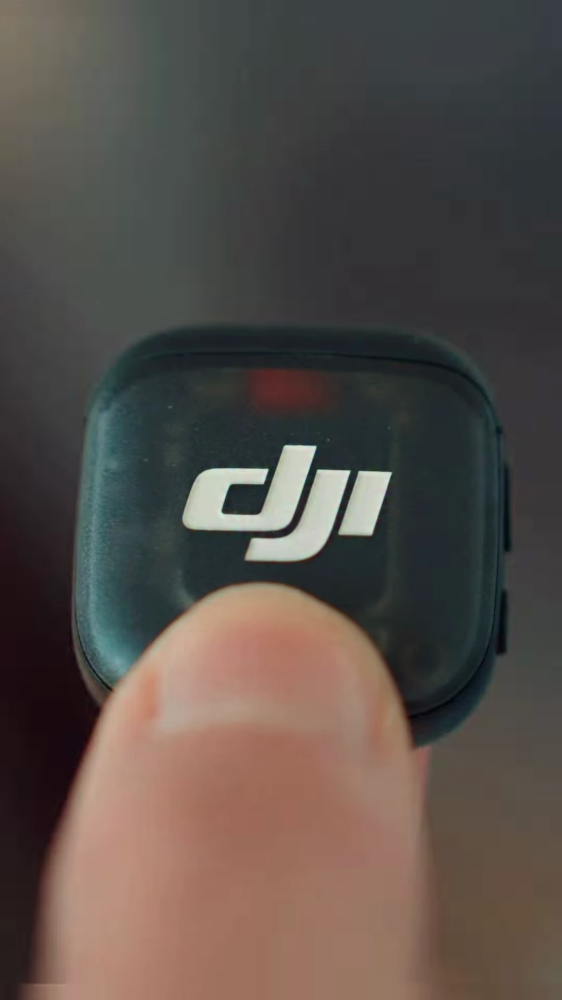
KHOẢNH KHẮC VÀNG (KEYFRAME)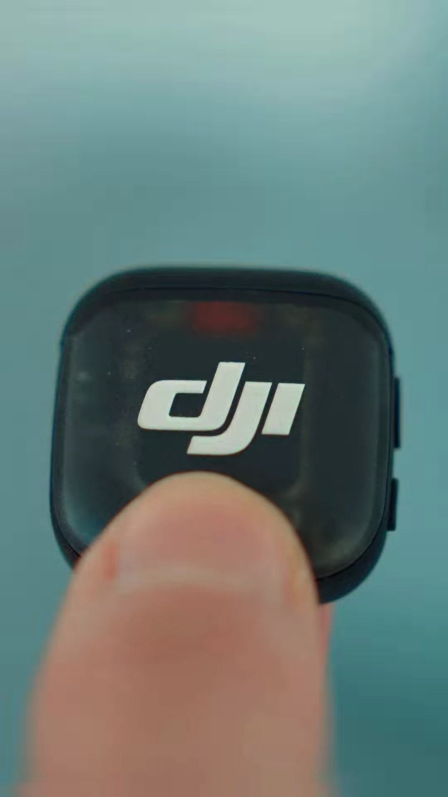
CUỐI SHOT (0.60s)Ngón tay cái và ngón trỏ cầm chiếc transmitter DJI Mic màu đen nhám đặt sát ống kính máy quay trên phông nền ánh sáng ban ngày ấm áp. Đèn LED chỉ thị nhấp nháy chuyển trạng thái khi bật nguồn.
Tách lớp chủ thể hoàn hảo với độ sâu trường ảnh mỏng (DoF), độ tương phản cao giữa logo DJI trắng nổi bật trên thân vỏ đen nhám, background bokeh ấm áp tạo sự tập trung tuyệt đối vào sản phẩm.
Thời lượng 0.60s cực nhanh đòi hỏi mắt người xem phải phản xạ tức thì; ngón tay che khuất một phần viền dưới của transmitter.
Mở đầu video sản phẩm bằng cú quay cận cảnh Macro kết hợp âm thanh bật nguồn vật lý (Tactile Click) là chiếc neo giữ chân người xem hiệu quả nhất ngay giây đầu tiên.

Hít nam châm đa năng lên đèn nấm kim loại: Trình diễn tính năng ngàm hít siêu tốc và âm thanh 'Clack' thỏa mãn
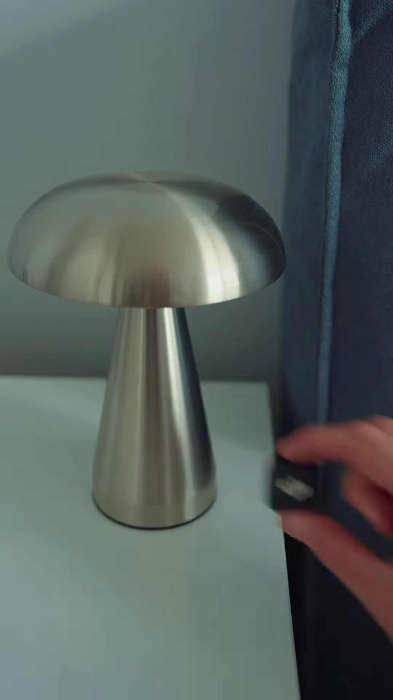
ĐẦU SHOT (0.60s) KHOẢNH KHẮC VÀNG (KEYFRAME)
KHOẢNH KHẮC VÀNG (KEYFRAME)
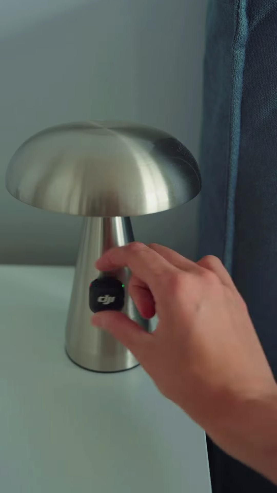
CUỐI SHOT (1.00s)Bàn tay đưa chiếc DJI Mic lại gần thân kim loại của chiếc đèn bàn hình nấm (Mushroom Lamp) bằng thép không gỉ, chiếc mic tự động hít chặt vào bề mặt kim loại với lực hút từ tính mạnh.
Khai thác bề mặt kim loại bóng bẩy của món đồ nội thất thiết kế tạo đường phản chiếu ánh sáng sang trọng, góc máy 1/3 phô diễn hoàn hảo tính tiện dụng của ngàm nam châm.
Vạt áo tối màu ở cạnh phải hơi choán diện tích khung hình; góc hít nghiêng làm logo DJI bị xoay nhẹ so với trục thẳng đứng.
Khi giới thiệu tính năng nam châm của phụ kiện công nghệ, gắn lên đồ decor cao cấp sẽ nâng tầm giá trị sản phẩm hơn nhiều so với chỉ kẹp lên cổ áo thông thường.

Gắn ngầm dưới dầm bàn làm việc: Phô diễn khả năng giấu mic vô hình (Hidden Mic Rigging) cho mọi không gian làm việc
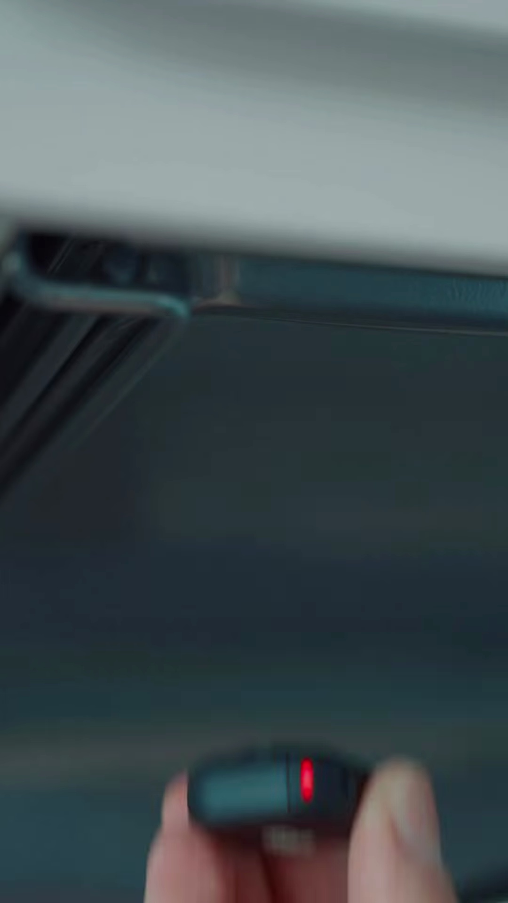
ĐẦU SHOT (1.00s) KHOẢNH KHẮC VÀNG (KEYFRAME)
KHOẢNH KHẮC VÀNG (KEYFRAME)
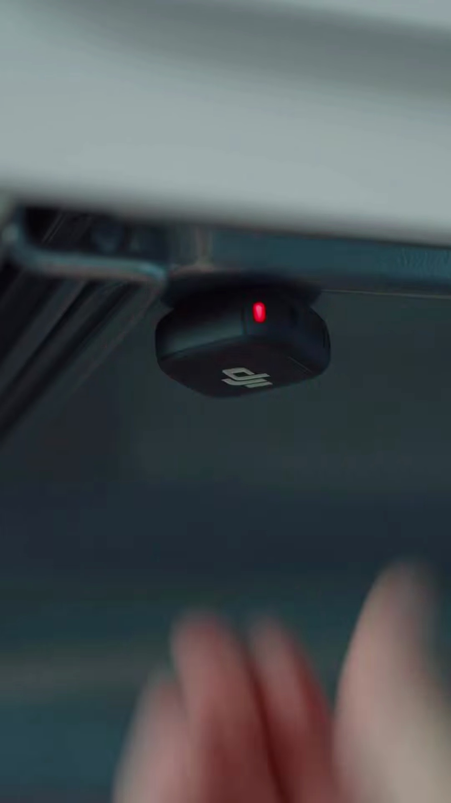
CUỐI SHOT (1.60s)Góc máy thấp đặt dưới gầm bàn nhìn chếch lên: Bàn tay đưa chiếc DJI Mic hít thẳng vào thanh dầm thép chịu lực dưới đáy mặt bàn màu trắng. Đèn LED đỏ trên mic phát sáng rực rỡ trong vùng tối.
Góc quay Low-Angle Under-Desk bất ngờ, độ tương phản ánh sáng giữa vùng tối gầm bàn và ánh sáng viền mặt bàn làm bật lên đèn LED trạng thái màu đỏ.
Chuyển động rút tay ra ở những frame cuối hơi nhanh tạo vệt mờ chuyển động (Motion Blur) nhẹ.
Khai thác các góc đặt mic khuất tầm nhìn (Under-desk/Under-shelf) để kích thích trí tò mò của creator về các giải pháp thu âm hiện trường kín đáo và tinh gọn.

Ngàm hít trực tiếp lên lưỡi dao Tefal: Cú gài bẫy thị giác táo bạo (Bold Prop Pairing) chuẩn bị cho phân đoạn ASMR cắt gọt
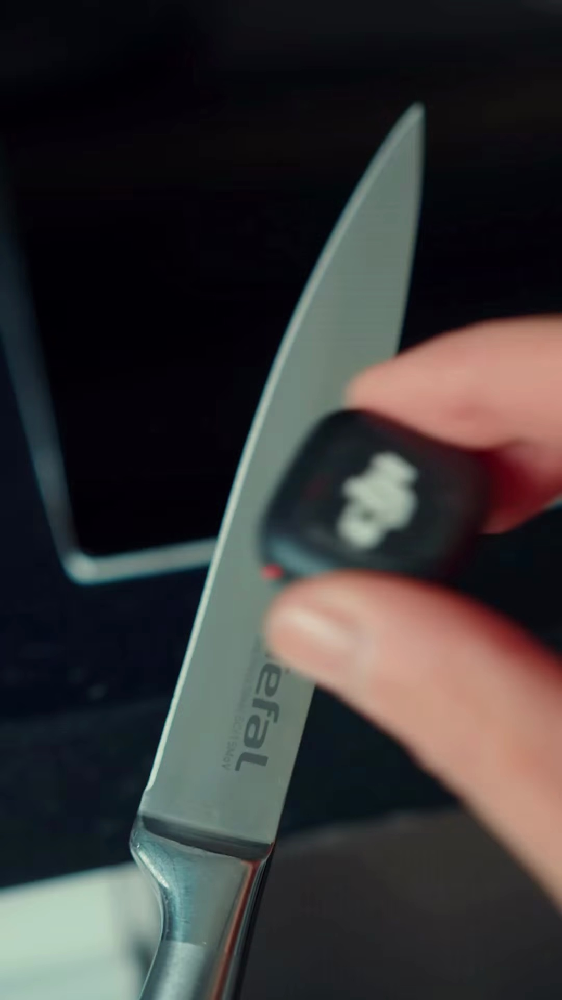
ĐẦU SHOT (1.60s) KHOẢNH KHẮC VÀNG (KEYFRAME)
KHOẢNH KHẮC VÀNG (KEYFRAME)
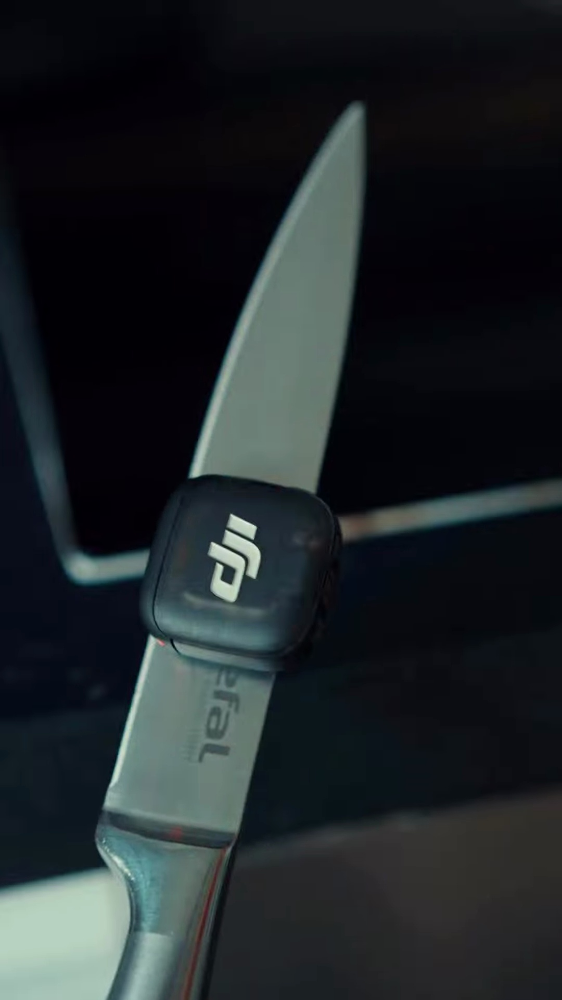
CUỐI SHOT (2.00s)Lưỡi dao đầu bếp Tefal bằng thép sáng loáng dựng đứng giữa khung hình; bàn tay dứt khoát đưa chiếc DJI Mic ốp chặt vào mặt phẳng lưỡi dao.
Lưỡi dao vát xéo chia đôi khung hình tạo đường chéo thị giác (Diagonal Dynamic Line) cực kỳ sắc sảo; ý tưởng gắn micro lên dao bếp kích thích mạnh mẽ trí tò mò của khán giả.
Ánh phản quang trên lưỡi kim loại hơi chói nhẹ ở mép trên; ngón tay che một phần thân mic khi vừa chạm vào.
Gắn micro trực tiếp lên công cụ hành động (lưỡi dao, bút vẽ, cọ sơn) là bí quyết thu trọn âm thanh siêu cận nguồn phát mà không cần thiết bị thu âm cồng kềnh.

Cú máy hạ thấp theo quỹ đạo lưỡi dao: Duy trì nhịp chuyển tiếp mượt mà nối liền khâu setup sang thao tác nấu nướng
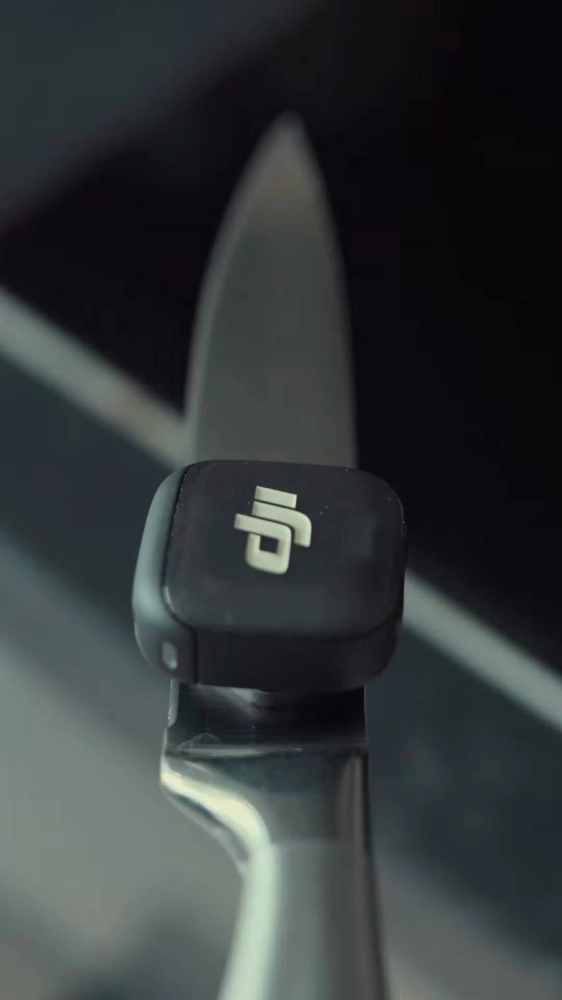
ĐẦU SHOT (2.00s)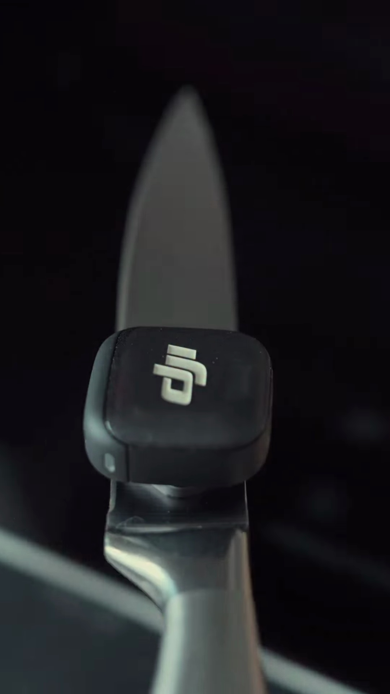
KHOẢNH KHẮC VÀNG (KEYFRAME)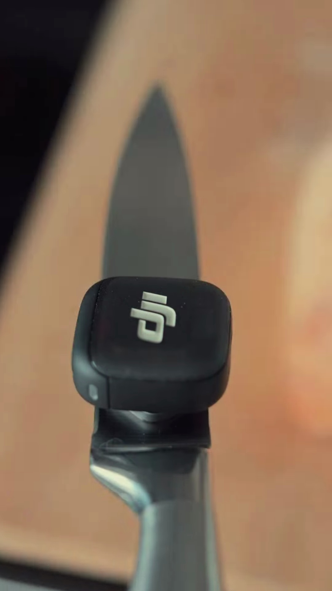
CUỐI SHOT (3.00s)Máy quay chuyển động hạ thấp (Tilt Down Tracking) theo quỹ đạo lưỡi dao có gắn DJI Mic, lưỡi dao lướt êm ái tiến sát mặt thớt gỗ chuẩn bị thực hiện thao tác cắt bánh mì.
Chuyển động máy mượt mà đồng bộ với hành động hạ dao, xóa mờ hậu cảnh tối ưu giúp giữ trọn tiêu điểm vào chiếc mic gắn trên thân dao.
Hậu cảnh góc trái hơi thiếu sáng (underexposed) làm mất một phần chi tiết không gian bếp.
Sử dụng cú máy di chuyển có hướng rõ ràng (Directional Movement) để làm cầu nối mượt mà giữa cảnh lắp đặt thiết bị và cảnh hành động thực tế.
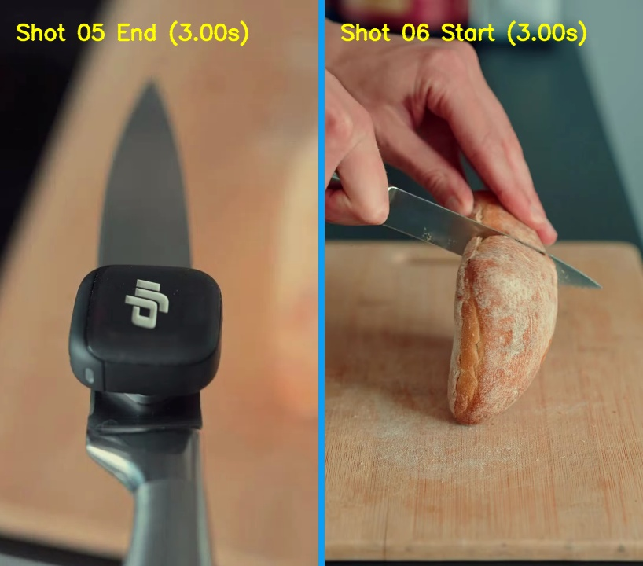
Cắt bánh mì giòn rụm với mic gắn lưỡi dao: Trải nghiệm ASMR thính giác cực hạn biến âm thanh đời thường thành khoái cảm
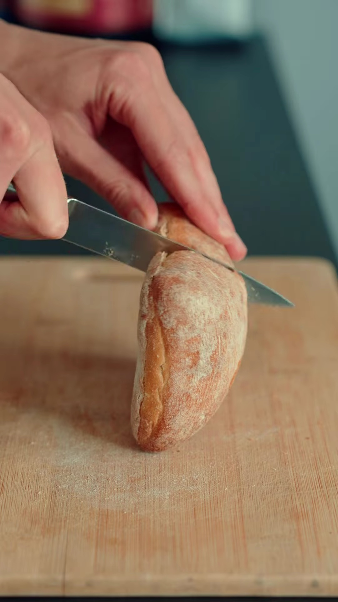
ĐẦU SHOT (3.00s)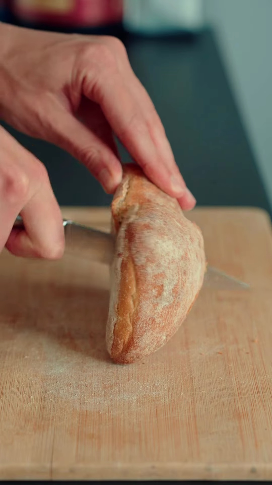
KHOẢNH KHẮC VÀNG (KEYFRAME)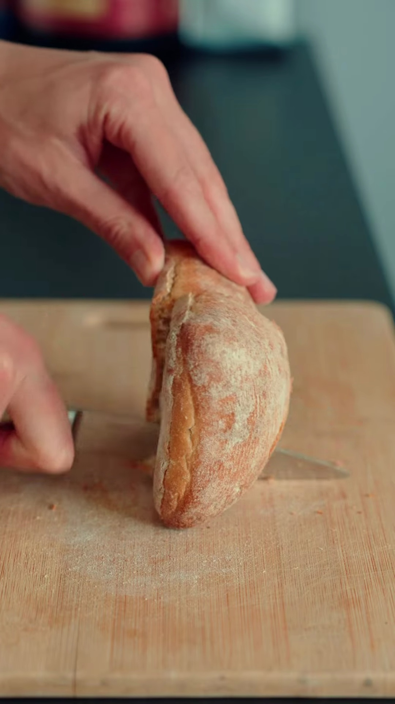
CUỐI SHOT (3.96s)Hai bàn tay cầm dao có gắn DJI Mic cắt dứt khoát qua ổ bánh mì vỏ giòn (Artisanal sourdough loaf) trên mặt thớt gỗ, từng mảnh vỏ bánh mì vỡ vụn bắn ra sinh động.
Bố cục cân xứng hoàn hảo, ánh sáng ban ngày làm nổi bật từng thớ vụn bánh mì vàng óng, âm thanh đồng bộ tuyệt đối với từng nhịp ấn dao tạo khoái cảm ASMR cực đại.
Cạnh trên khung hình hơi sát đầu ngón tay của người cắt; góc quay ngang có thể quen thuộc nếu thiếu yếu tố micro độc lạ.
Khai thác các vật thể có kết cấu âm thanh đa tầng (vỏ giòn, ruột mềm) để tạo nội dung ASMR có tính kích thích giác quan cao nhất.
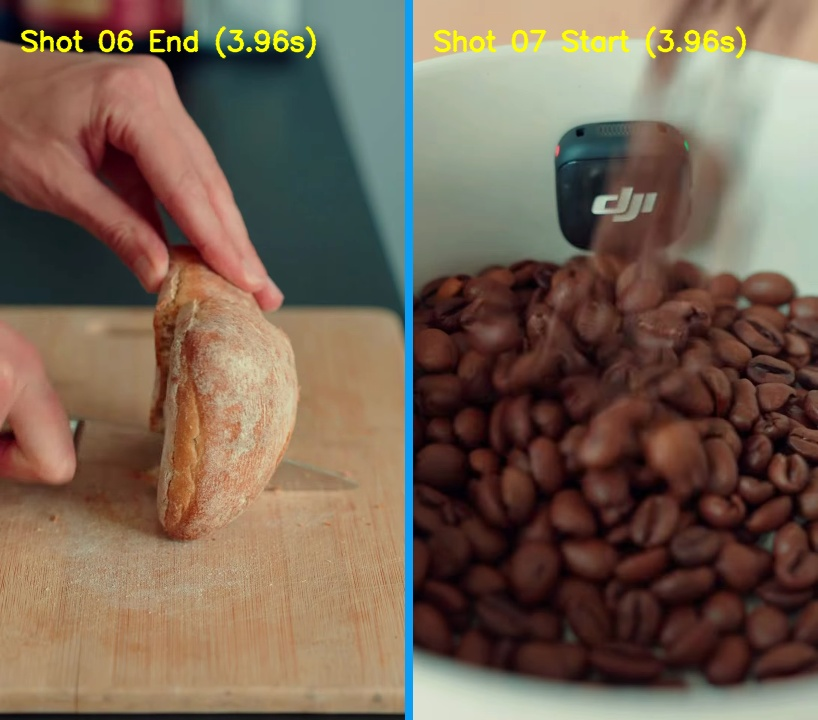
Hạt cà phê rơi mưa rào quanh micro: Tận dụng chuyển động rơi tự do tạo hiệu ứng thị giác phân tán và âm thanh lách tách
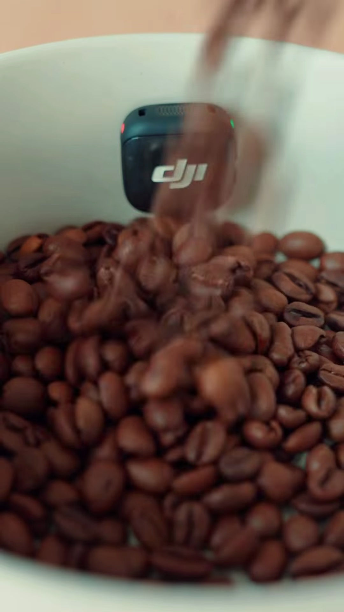
ĐẦU SHOT (3.96s) KHOẢNH KHẮC VÀNG (KEYFRAME)
KHOẢNH KHẮC VÀNG (KEYFRAME)
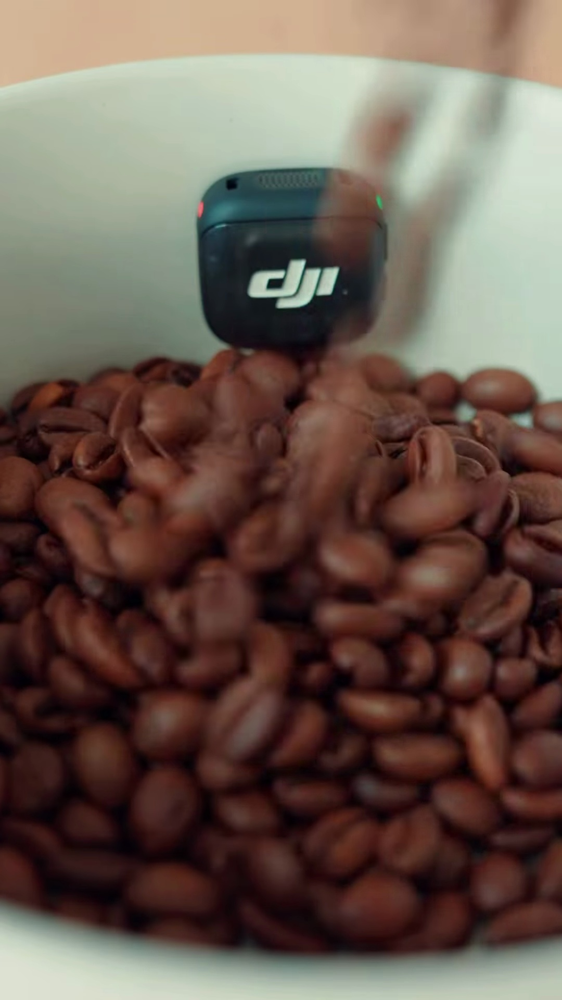
CUỐI SHOT (4.56s)Góc nhìn từ trên xuống vào lòng bát sứ trắng: Cơn mưa hạt cà phê rang nâu bóng rơi xối xả nảy tanh tách xung quanh chiếc DJI Mic đặt cố định ở tâm đáy bát.
Hàng trăm hạt cà phê rơi tạo mật độ chuyển động dày đặc (Kinetic Density), sắc nâu cánh gián bóng bẩy tương phản với màu trắng của bát sứ và logo DJI.
Hạt cà phê rơi quá nhanh che khuất một phần micro trong 0.15s ở giữa phân cảnh.
Đặt micro vào tâm điểm của quỹ đạo rơi tự do (hạt cà phê, đá viên, giọt nước) là công thức kinh điển để tạo ra shot commercial ẩm thực đẳng cấp.
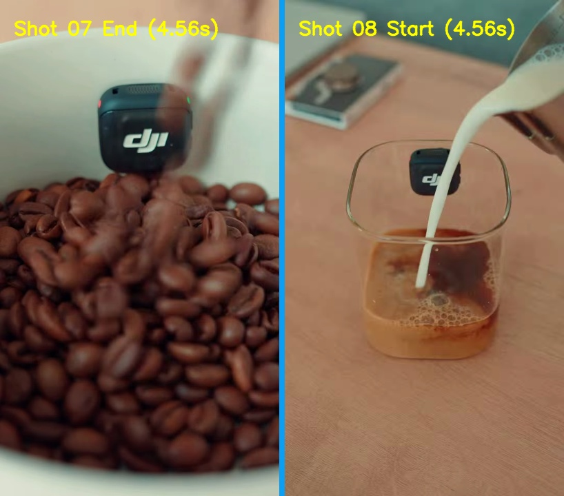
Rót sữa tươi cuộn xoáy vào ly cà phê: Vũ điệu hòa tan màu sắc (Color Swirl Dynamics) và âm thanh rót nước êm dịu
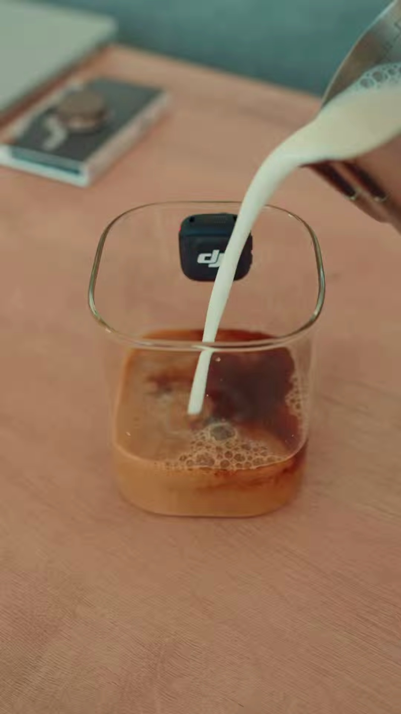
ĐẦU SHOT (4.56s) KHOẢNH KHẮC VÀNG (KEYFRAME)
KHOẢNH KHẮC VÀNG (KEYFRAME)
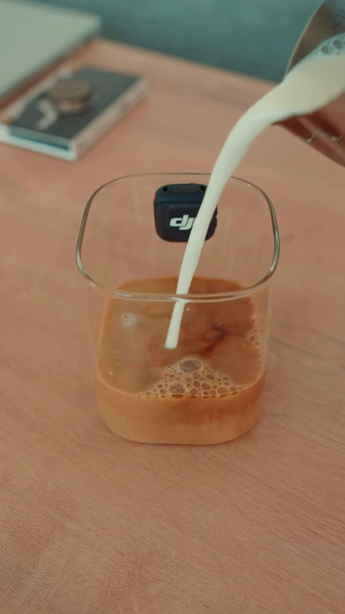
CUỐI SHOT (5.64s)Cận cảnh ly thủy tinh vuông đựng cà phê đá: Dòng sữa tươi trắng muốt được rót từ từ hòa tan cuộn xoáy vào lớp cà phê nâu sẫm, trong khi chiếc DJI Mic được kẹp sát ngay thành ly.
Hiệu ứng cuộn xoáy màu sắc lộng lẫy (Fluid Vortex dynamics), ly thủy tinh trong suốt giúp quan sát toàn bộ diễn biến thị giác đầy mê hoặc.
Thành ly thủy tinh có vệt phản xạ ánh sáng đèn trần nhẹ, cần kính phân cực CPL để triệt tiêu hoàn toàn bóng gương.
Rót chất lỏng có độ tương phản màu cao (sữa trắng vào cà phê đen) luôn là shot quay giữ chân người xem tốt nhất trong các video đồ uống và lifestyle.
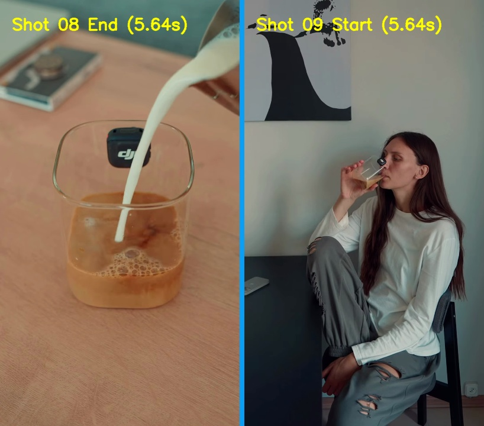
Khoảnh khắc nhấp cà phê thư thái: Điểm nghỉ nhịp thị giác (Visual Breathing Pause) nhân cách hóa tác giả và tạo kết nối cảm xúc
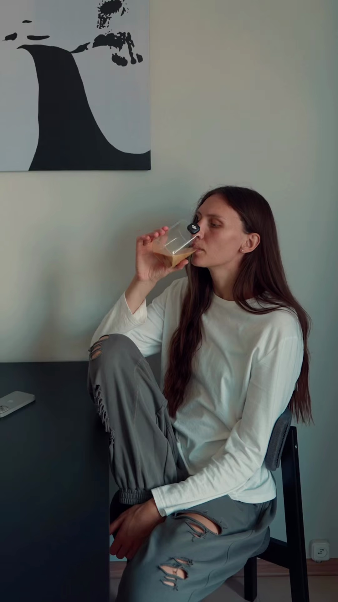
ĐẦU SHOT (5.64s)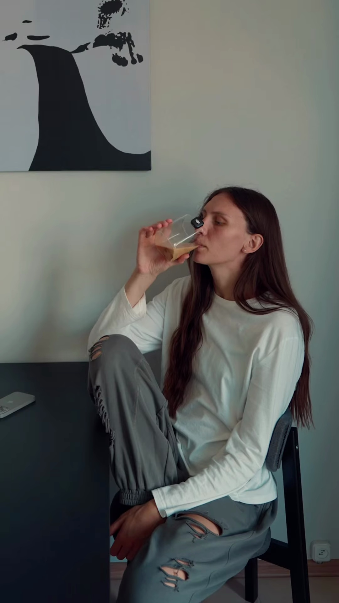
KHOẢNH KHẮC VÀNG (KEYFRAME)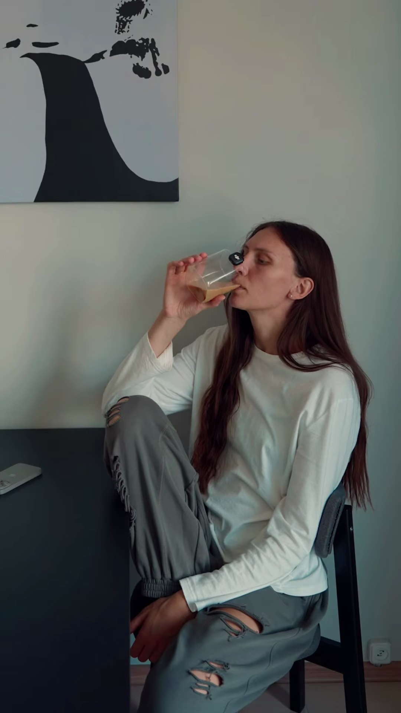
CUỐI SHOT (6.32s)Trung cảnh nhân vật nữ tác giả mặc áo thun trắng, quần jeans rách ngồi thư thái bên bàn làm việc, đưa ly cà phê sữa lên môi nhấp một ngụm, phía sau là bức tranh nghệ thuật đồ họa đen trắng.
Bố cục góc 45 độ thanh lịch, phong cách thời trang tối giản đồng điệu với không gian căn phòng, tạo điểm nghỉ hoàn hảo sau chuỗi shot macro dồn dập.
Mặt bàn ở góc dưới hơi tối; thời lượng 0.68s hơi ngắn để người xem kịp cảm nhận trọn vẹn biểu cảm thư thái của nhân vật.
Sau một chuỗi các shot macro đồ vật liên tiếp, luôn cần một shot trung cảnh có sự hiện diện của con người để làm 'điểm thở' cân bằng nhịp điệu video.
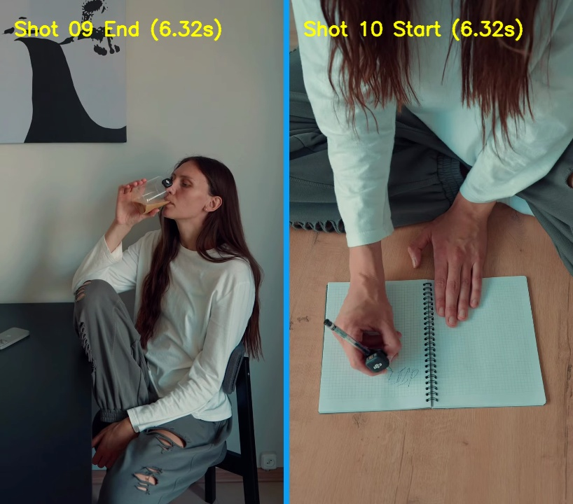
Toàn cảnh góc cao viết sổ tay: Thiết lập không gian sáng tạo tĩnh lặng chuyển tiếp mạch nội dung sang góc làm việc trí tuệ
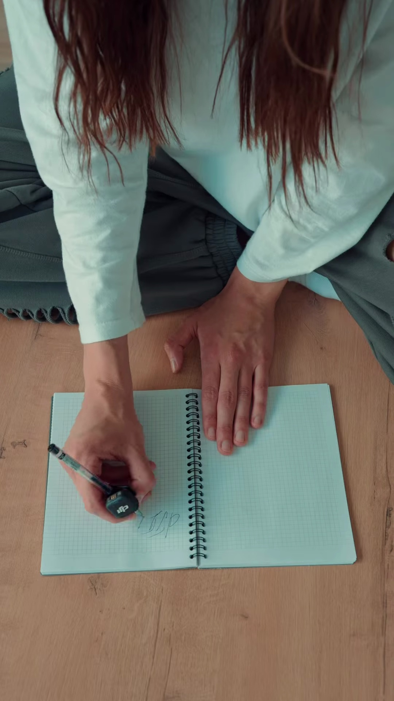
ĐẦU SHOT (6.32s) KHOẢNH KHẮC VÀNG (KEYFRAME)
KHOẢNH KHẮC VÀNG (KEYFRAME)
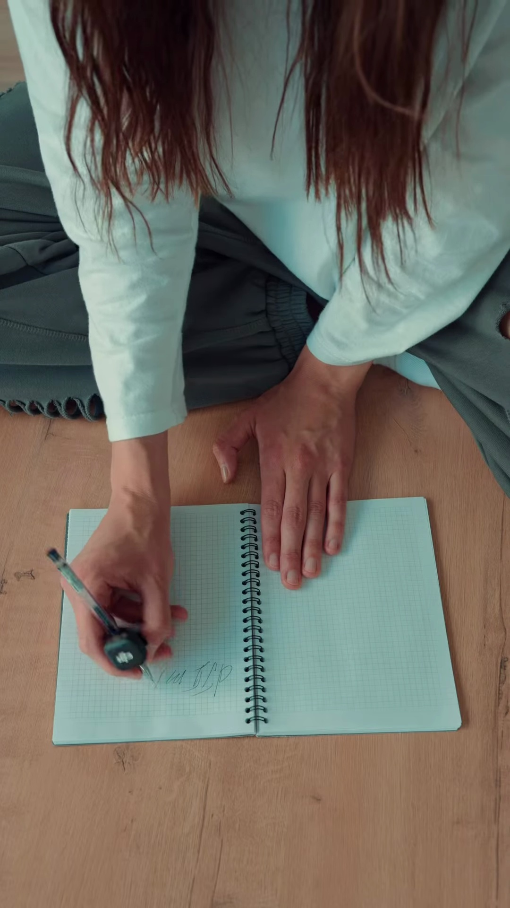
CUỐI SHOT (7.36s)Góc máy từ trên cao nhìn xuống (High-Angle Overhead): Tác giả ngồi khoanh chân trên sàn gỗ, tay cầm cây bút có gắn chiếc DJI Mic trên thân bút, bắt đầu đặt bút viết vào cuốn sổ tay kẻ ô carô.
Góc nhìn 90 độ từ trên xuống bao quát toàn bộ không gian làm việc tĩnh lặng, mái tóc dài buông xõa tạo đường dẫn mắt tự nhiên xuống trang sổ mở rộng.
Khoảng cách máy tương đối xa làm chiếc micro bị thu nhỏ trong tổng thể bố cục khung hình.
Sử dụng cú máy toàn cảnh thiết lập không gian (Establishing Shot) trước khi cắt vào cận cảnh chi tiết giúp người xem nắm bắt rõ bối cảnh và hành động.
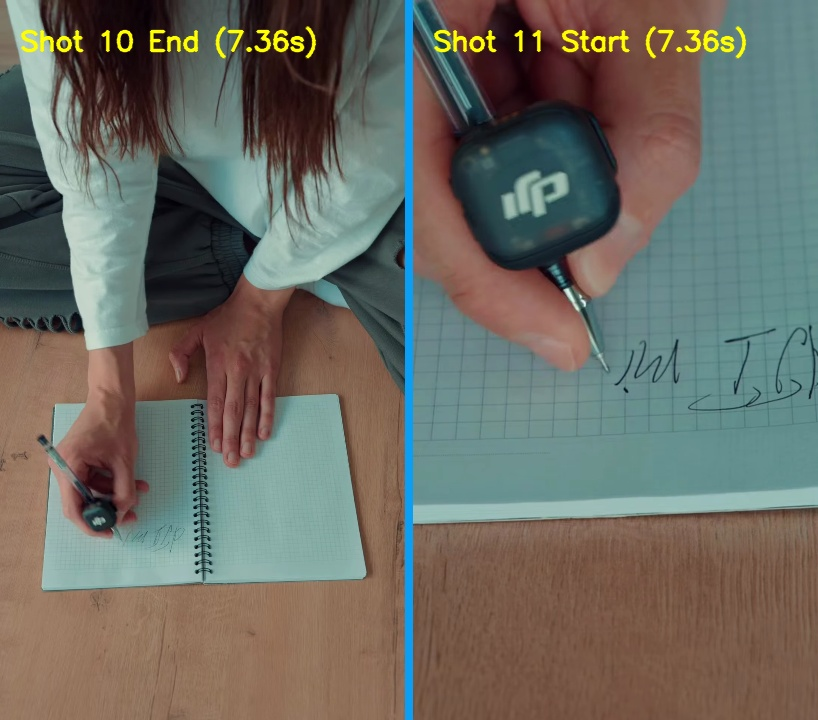
Nét chữ 'DJI mic 3' cào trên giấy carô: Âm thanh viết bút sột soạt ma mị khắc sâu tên sản phẩm vào tâm trí khán giả
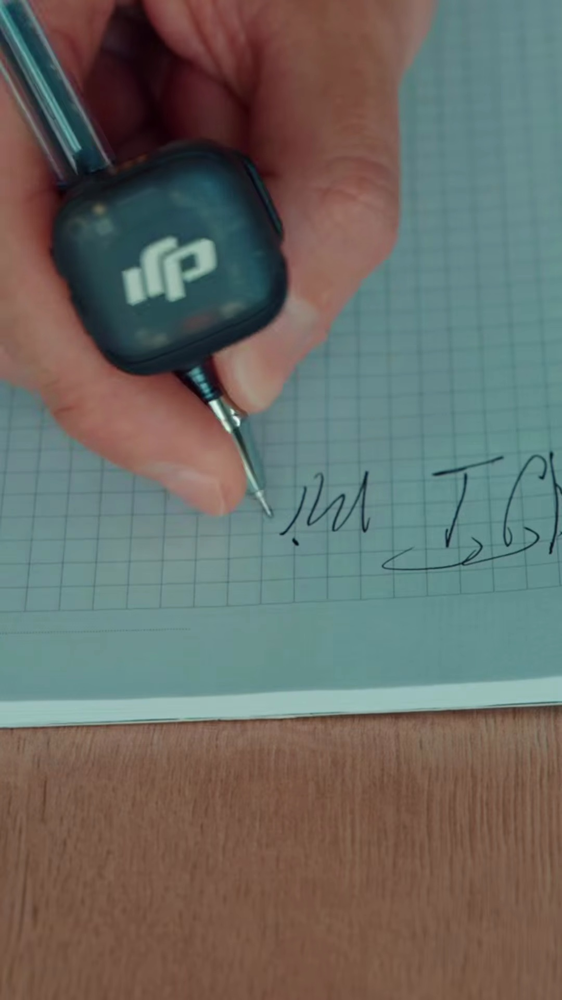
ĐẦU SHOT (7.36s)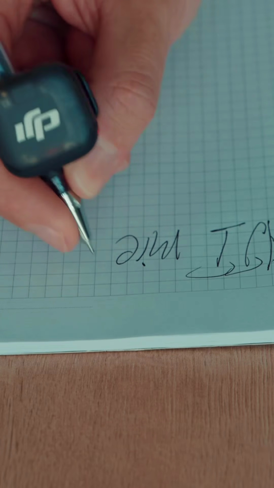
KHOẢNH KHẮC VÀNG (KEYFRAME)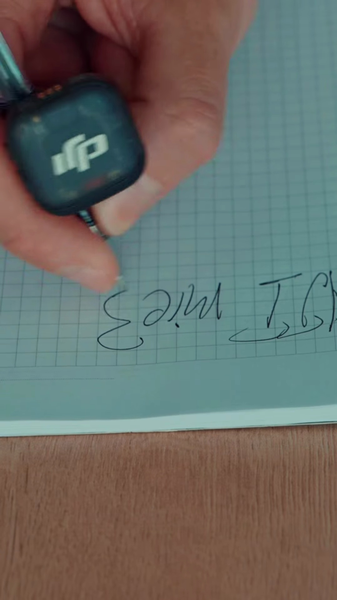
CUỐI SHOT (8.32s)Cận cảnh đặc tả (Extreme Close-Up POV) ngòi bút bi kim loại lướt trên giấy kẻ ô viết từng nét chữ 'DJI mic 3', với chiếc micro DJI Mic được kẹp chắc chắn trên thân bút ngay sát ngón tay.
Góc nhìn POV siêu cận cảnh, nét chữ viết tay tạo cảm giác nghệ thuật thủ công, âm thanh cào giấy là đỉnh cao kích thích thính giác ASMR.
Góc nhìn ngược 180 độ theo hướng người viết đòi hỏi người xem mất một tích tắc để đọc xuôi dòng chữ.
Viết tên sản phẩm bằng tay kèm âm thanh ngòi bút cào giấy chân thực là cách định vị thương hiệu (Product Placement) tinh tế và khó quên nhất.
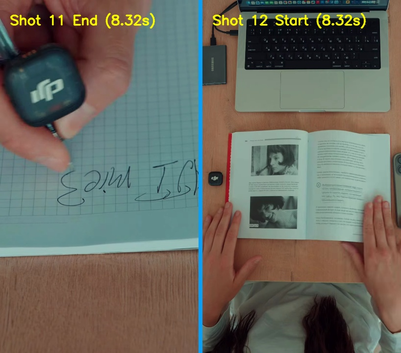
Bố cục Flat-Lay đối xứng lật trang sách: Tạo nhịp điệu thính giác xào xạc và phô diễn không gian làm việc tối giản
 ĐẦU SHOT (8.32s)
ĐẦU SHOT (8.32s)
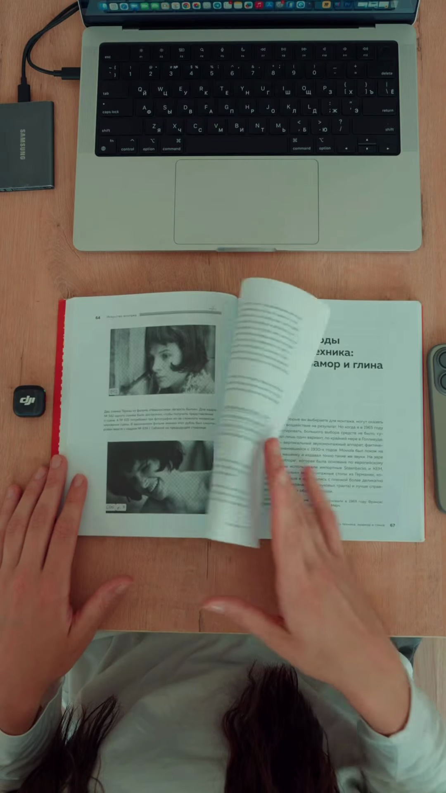
KHOẢNH KHẮC VÀNG (KEYFRAME)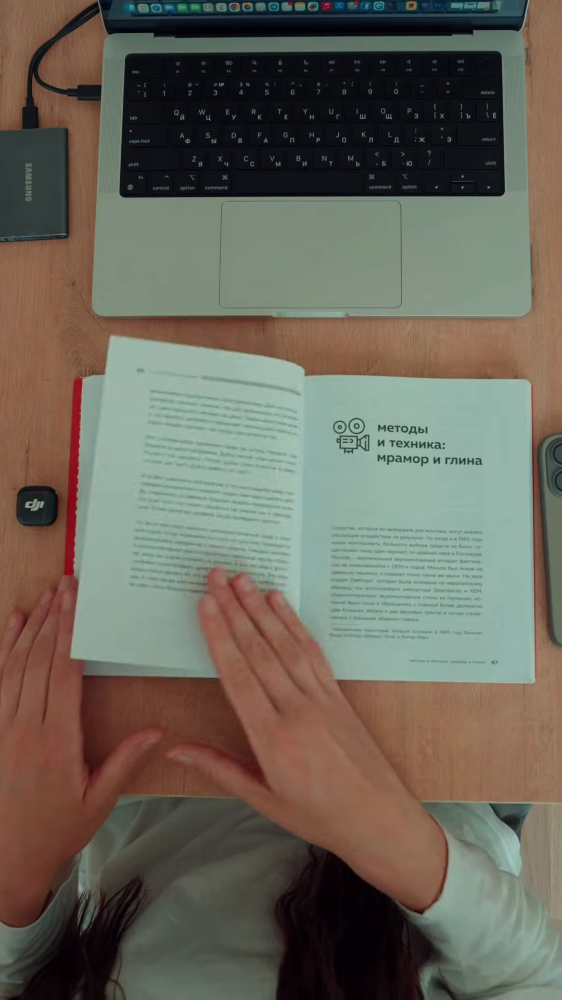
CUỐI SHOT (9.40s)Bố cục phẳng từ trên xuống (Flat-Lay Top-Down): Bàn làm việc bố trí cân xứng với MacBook Pro phía trên, cuốn sách ảnh nghệ thuật mở ở giữa, hai bàn tay lật nhanh từng trang sách bên cạnh chiếc DJI Mic.
Bố cục Flat-lay chuẩn mực studio, các đường nét hình học vuông vắn tạo trật tự thị giác thư thái, âm thanh lật giấy liên hồi tạo nhịp điệu vui tươi.
Hai bàn tay khi di chuyển nhanh che khuất một phần trang sách ở những khung hình giữa.
Sắp xếp các món đồ công nghệ và sách vở theo các trục đối xứng song song là phương pháp hữu hiệu nhất để tạo khung hình Flat-lay chuyên nghiệp.
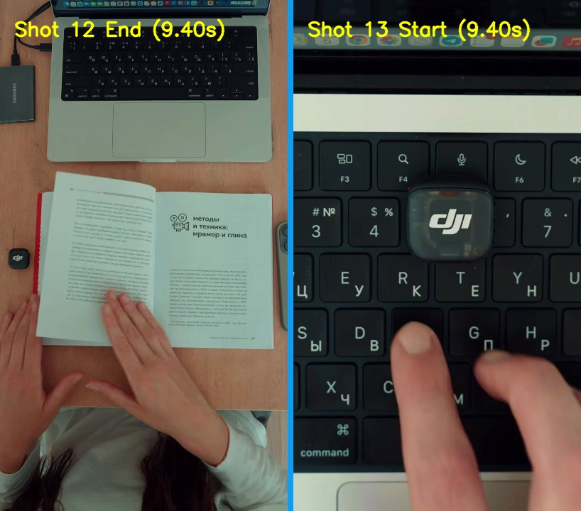
Gõ phím MacBook với micro đặt giữa keycaps: Khai thác âm thanh gõ phím ASMR quen thuộc của giới sáng tạo nội dung
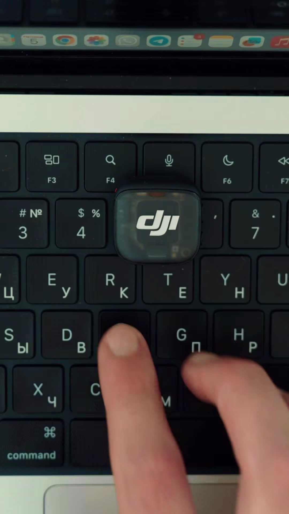
ĐẦU SHOT (9.40s)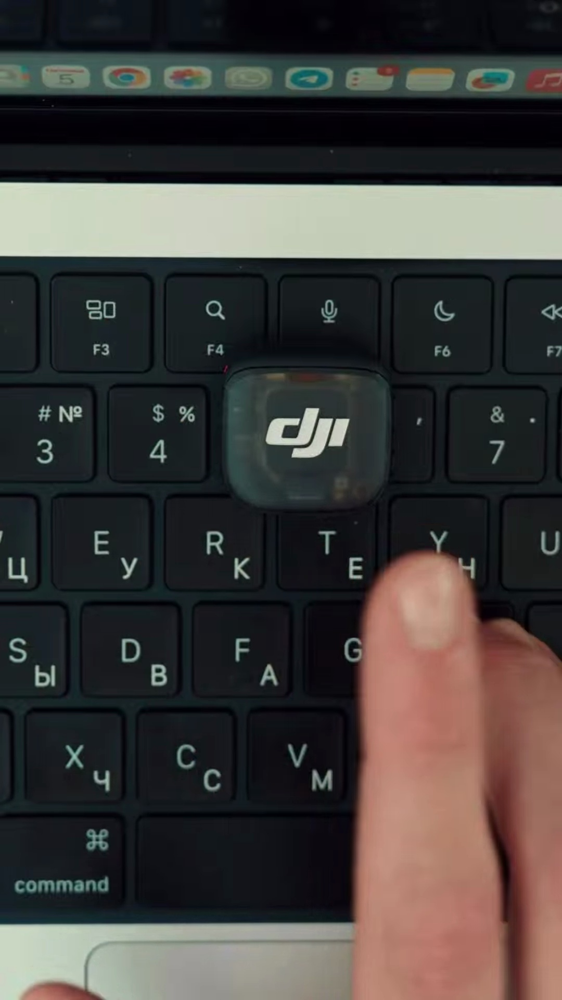
KHOẢNH KHẮC VÀNG (KEYFRAME)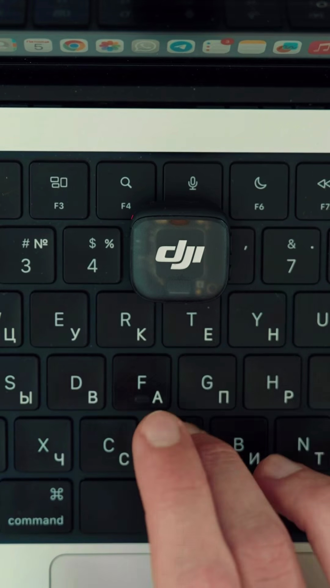
CUỐI SHOT (10.44s)Cận cảnh bàn phím MacBook Pro: Chiếc DJI Mic được đặt nằm ngang trên hàng phím số (4-5-6-7), các đầu ngón tay lướt gõ phím với tốc độ cao xung quanh micro.
Góc quay Macro bắt trọn kết cấu phím nhám Apple và logo DJI, ngón tay gõ phím tạo chuyển động tràn đầy năng lượng làm việc.
Ngón tay gõ nhanh đôi lúc che khuất ánh sáng chiếu vào logo DJI trên thân micro.
Tận dụng những âm thanh đời thường quen thuộc nhất của dân văn phòng/creator và thu âm ở cự ly siêu gần để tạo sự đồng cảm giác quan tức thì.
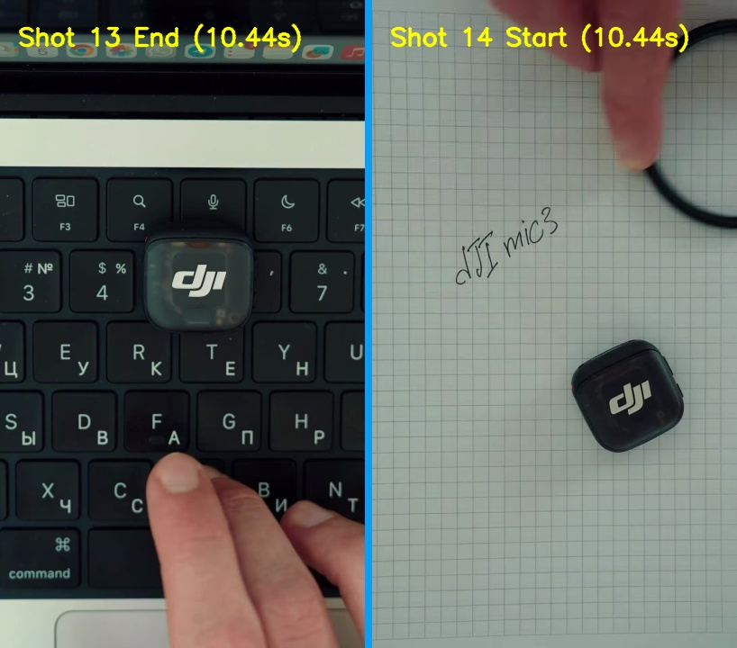
Khung tròn Lens Filter khóa trọn chữ 'DJI mic 3': Cú chốt hạ điện ảnh hoàn hảo kết hợp thiết bị máy ảnh và micro chuyên nghiệp
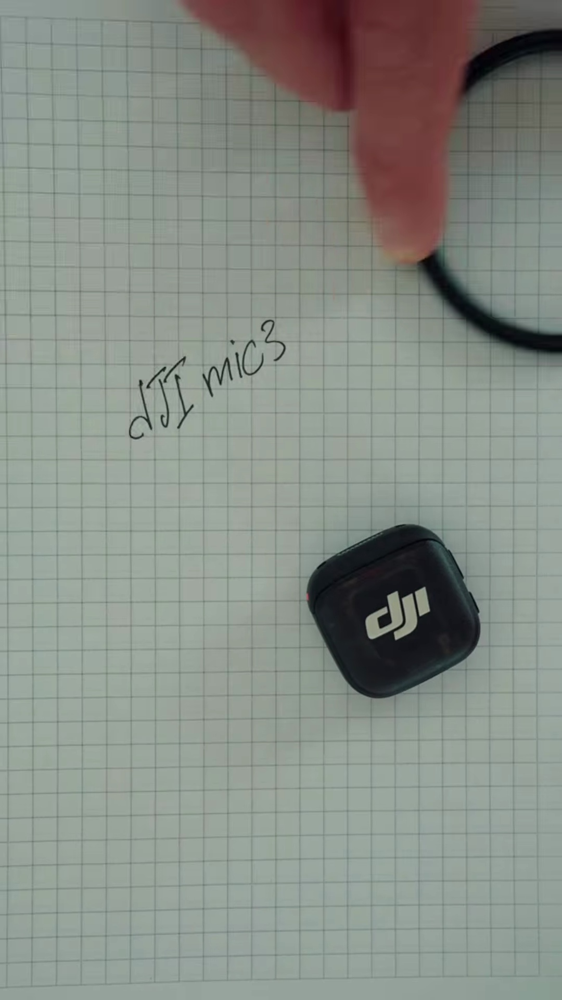
ĐẦU SHOT (10.44s)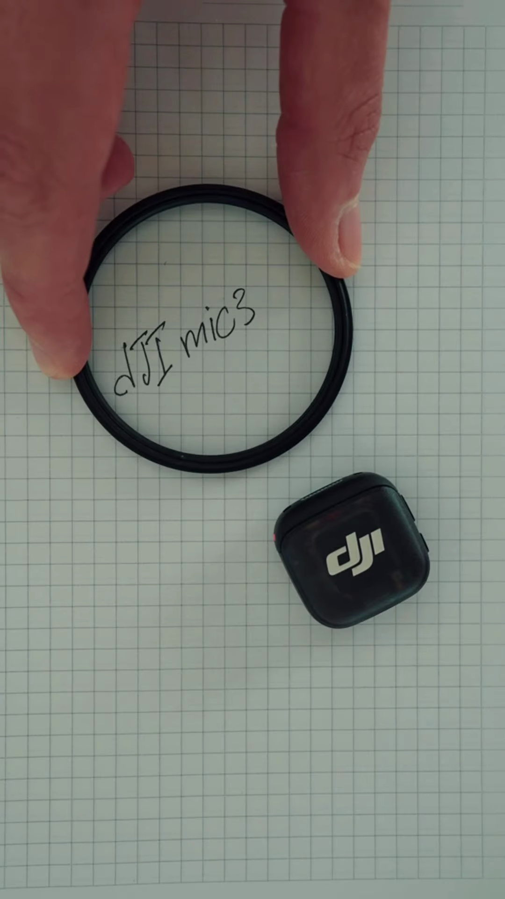
CUỐI SHOT (11.32s)Góc nhìn trên xuống trang giấy kẻ ô: Bàn tay đặt vòng filter tròn bằng kim loại của ống kính máy ảnh bao bọc xung quanh dòng chữ viết tay 'DJI mic 3', bên cạnh là chiếc micro DJI Mic nằm ngay ngắn.
Vòng tròn filter đóng vai trò 'khung trong khung' (Circular Framing) cô đọng hoàn hảo tên sản phẩm và lĩnh vực nhiếp ảnh/làm phim, bố cục tối giản và thanh lịch.
Thời lượng 0.88s kết thúc hơi nhanh; nếu giữ thêm 0.5s sẽ tạo độ lắng sâu hơn cho cái kết của video.
Sử dụng phụ kiện làm phim (Filter, Lens Cap) làm đạo cụ kết bài để khẳng định đẳng cấp chuyên nghiệp và đối tượng khách hàng mục tiêu của sản phẩm.